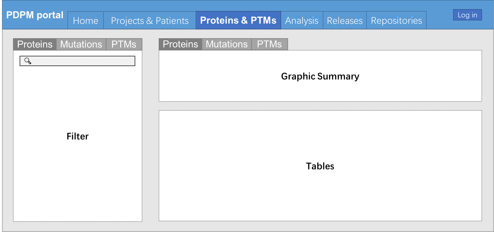

用户自定义数据选取
应当保证用户能够按照自己的喜好任意的选取数据，以拓展数据选取与数据分析的可能性。具体而言，这个页面的主要内容几乎是完全参考GDC与ICGC Data portal做成的，因此并不需要为此付出太多精力。页面布局如下图所示：

这个图是先前某个设计文档当中的，当时只考虑的实体与现在不同，现在来看其中应当考虑的实体应当是前述“Patient”、“Protein”与“Proteoform”三种
在这种设计布局下，每个页面当中有“数据过滤（Filter）”、“图形总结（Graphic Summary）”与“表格（Tables）”三类。每种实体的过滤指标、图形总结、表格的表头如下：
患者 - Patient
- 数据过滤（Filter）：病灶（Primary Site）、所属研究项目（Project）、性别（Gender）、确诊年龄（Age at Diagnosis）、肿瘤分期（Tumor Stage）、生存状态（Vital Status）、疾病状态（Disease Status）
- 图形总结（Graphic Summary）：病灶对应的疾病种类及其研究项目【饼图，两圈】，性别、国别、肿瘤分期、生存状态、疾病状态【以上五者皆为饼图】，确诊年龄【柱状图】
- 表格（Tables）的表头：ID、所属研究项目、病灶、疾病种类、年龄、性别、数据种类【与Project部分相同】、生存时间、生存状态等等。这个表头需要用一个更加通用的表头替代
蛋白质 - Protein
- 数据过滤（Filter）：器官特异性、器官特异性等级、有无PDB注释、途径【搜索框】、GO【搜索框】、靶向药物【搜索框】、对应基因所在位置【搜索框】、变异造成的影响【High or Low】
- 图形总结（Graphic Summary）：蛋白质突变频次【柱状图】、蛋白质突变对于生存的影响【KM图，针对同一个蛋白质的全部突变】
- 表格（Tables）的表头：Uniprot ID、HUGO Symbol，Name、Ensembl ID、RefSeq ID、PDB编号、Researches、Patients affected、Dependency、PTM种类数
Proteoform
这部分暂时不进行讨论，留待后续开发过程讨论
其他功能
除以上主要部分以外，这个部分应当有一些其他的功能。例如将选取的实体保存到集合当中、速览已经选取的实体作为一个集合所表现出来的性质等等。以上两个功能必须添加，前者参考GDC、ICGC Data portal；至于后者，患者集合使用患者集合的概览方法进行概览，蛋白质使用蛋白质集合的概览方法进行概览